实战及应用
如何基于Raft从0到1构建一个支持多存储引擎分布式KV服务？
今天我就和你聊聊如何实现一个类etcd、支持多存储引擎的KV服务，我们将基于etcd自带的 raftexample 项目快速构建它。
为了方便后面描述，我把它命名为metcd（表示微型的etcd），它是raftexample的加强版。希望通过metcd这个小小的实战项目，能够帮助你进一步理解etcd乃至分布式存储服务的核心架构、原理、典型问题解决方案。
同时在这个过程中，我将详细为你介绍etcd的Raft算法工程实现库、不同类型存储引擎的优缺点，拓宽你的知识视野，为你独立分析etcd源码，夯实基础。
整体架构设计
在和你深入聊代码细节之前，首先我和你从整体上介绍下系统架构。
下面是我给你画的metcd整体架构设计，它由API层、Raft层的共识模块、逻辑层及存储层组成的状态机组成。
接下来，我分别和你简要分析下API设计及复制状态机。
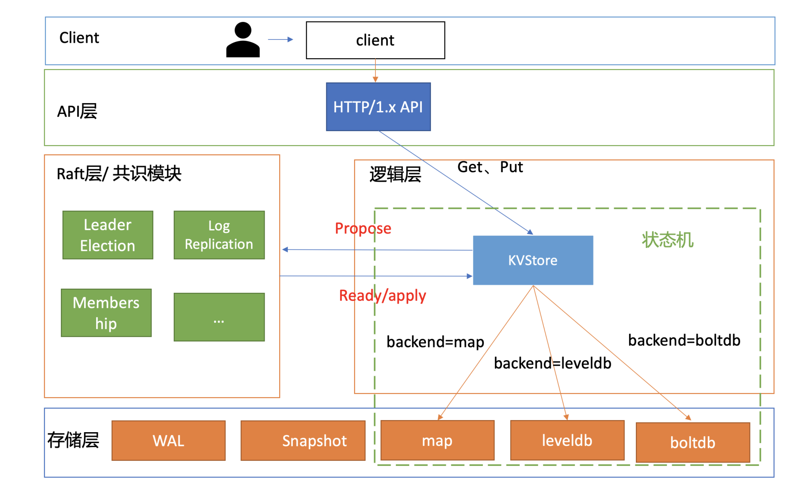
API设计
API是软件系统对外的语言，它是应用编程接口的缩写，由一组接口定义和协议组成。
在设计API的时候，我们往往会考虑以下几个因素：
- 性能。如etcd v2使用的是简单的HTTP/1.x，性能上无法满足大规模Kubernetes集群等场景的诉求，因此etcd v3使用的是基于HTTP/2的gRPC协议。
- 易用性、可调试性。如有的内部高并发服务为了满足性能等诉求，使用的是UDP协议。相比HTTP协议，UDP协议显然在易用性、可调试性上存在一定的差距。
- 开发效率、跨平台、可移植性。相比基于裸UDP、TCP协议设计的接口，如果你使用Protobuf等IDL语言，它支持跨平台、代码自动自动生成，开发效率更高。
- 安全性。如相比HTTP协议，使用HTTPS协议可对通信数据加密更安全，可适用于不安全的网络环境（比如公网传输）。
- 接口幂等性。幂等性简单来说，就是同样一个接口请求一次与多次的效果一样。若你的接口对外保证幂等性，则可降低使用者的复杂度。
因为我们场景的是POC(Proof of concept)、Demo开发，因此在metcd项目中，我们优先考虑点是易用性、可调试性，选择HTTP/1.x协议，接口上为了满足key-value操作，支持Get和Put接口即可。
假设metcd项目使用3379端口，Put和Get接口，如下所示。
- Put接口，设置key-value
curl -L http://127.0.0.1:3379/hello -XPUT -d world
- Get接口，查询key-value
curl -L http://127.0.0.1:3379/hello
world
复制状态机
了解完API设计，那最核心的复制状态机是如何工作的呢？
我们知道etcd是基于下图复制状态机实现的分布式KV服务，复制状态机由共识模块、日志模块、状态机组成。

我们的实战项目metcd，也正是使用与之一样的模型，并且使用etcd项目中实现的Raft算法库作为共识模块，此算法库已被广泛应用在etcd、cockroachdb、dgraph等开源项目中。
以下是复制状态机的写请求流程：
- client发起一个写请求（put hello = world）；
- server向Raft共识模块提交请求，共识模块生成一个写提案日志条目。若server是Leader，则把日志条目广播给其他节点，并持久化日志条目到WAL中；
- 当一半以上节点持久化日志条目后，Leader的共识模块将此日志条目标记为已提交（committed），并通知其他节点提交；
- server从共识模块获取已经提交的日志条目，异步应用到状态机存储中（boltdb/leveldb/memory），然后返回给client。
多存储引擎
了解完复制状态机模型后，我和你再深入介绍下状态机。状态机中最核心模块当然是存储引擎，那要如何同时支持多种存储引擎呢？
metcd项目将基于etcd本身自带的raftexample项目进行快速开发，而raftexample本身只支持内存存储。
因此我们通过将KV存储接口进行抽象化设计，实现支持多存储引擎。KVStore interface的定义如下所示。
type KVStore interface {
// LookUp get key value
Lookup(key string) (string, bool)
// Propose propose kv request into raft state machine
Propose(k, v string)
// ReadCommits consume entry from raft state machine into KvStore map until error
ReadCommits(commitC <-chan *string, errorC <-chan error)
// Snapshot return KvStore snapshot
Snapshot() ([]byte, error)
// RecoverFromSnapshot recover data from snapshot
RecoverFromSnapshot(snapshot []byte) error
// Close close backend databases
Close() err
}
基于KV接口抽象化的设计，我们只需要针对具体的存储引擎，实现对应的操作即可。
我们期望支持三种存储引擎，分别是内存map、boltdb、leveldb，并做一系列简化设计。一组metcd实例，通过metcd启动时的配置来决定使用哪种存储引擎。不同业务场景不同实例，比如读多写少的存储引擎可使用boltdb，写多读少的可使用leveldb。
接下来我和你重点介绍下存储引擎的选型及原理。
boltdb
boltdb是一个基于B+ tree实现的存储引擎库，在 10 中我已和你详细介绍过原理。
boltdb为什么适合读多写少？
对于读请求而言，一般情况下它可直接从内存中基于B+ tree遍历，快速获取数据返回给client，不涉及经过磁盘I/O。
对于写请求，它基于B+ tree查找写入位置，更新key-value。事务提交时，写请求包括B+ tree重平衡、分裂、持久化ditry page、持久化freelist、持久化meta page流程。同时，ditry page可能分布在文件的各个位置，它发起的是随机写磁盘I/O。
因此在boltdb中，完成一个写请求的开销相比读请求是大很多的。正如我在 16 和 17 中给你介绍的一样，一个3节点的8核16G空集群，线性读性能可以达到19万QPS，而写QPS仅为5万。
leveldb
那要如何设计适合写多读少的存储引擎呢?
最简单的思路当然是写内存最快。可是内存有限的，无法支撑大容量的数据存储，不持久化数据会丢失。
那能否直接将数据顺序追加到文件末尾（AOF）呢？因为磁盘的特点是顺序写性能比较快。
当然可以。 Bitcask 存储模型就是采用AOF模式，把写请求顺序追加到文件。Facebook的图片存储 Haystack 根据其论文介绍，也是使用类似的方案来解决大规模写入痛点。
那在AOF写入模型中如何实现查询数据呢？
很显然通过遍历文件一个个匹配key是可以的，但是它的性能是极差的。为了实现高性能的查询，最理想的解决方案从直接从内存中查询，但是内存是有限的，那么我们能否通过内存索引来记录一个key-value数据在文件中的偏移量，实现从磁盘快速读取呢？
是的，这正是 Bitcask 存储模型的查询的实现，它通过内存哈希表维护各个key-value数据的索引，实现了快速查找key-value数据。不过，内存中虽然只保存key索引信息，但是当key较多的时候，其对内存要求依然比较高。
快速了解完存储引擎提升写性能的核心思路（随机写转化为顺序写）之后，那leveldb它的原理是怎样的呢？与Bitcask存储模型有什么不一样？
leveldb是基于LSM tree(log-structured merge-tree)实现的key-value存储，它的架构如下图所示（ 引用自微软博客）。
它提升写性能的核心思路同样是将随机写转化为顺序写磁盘WAL文件和内存，结合了我们上面讨论的写内存和磁盘两种方法。数据持久化到WAL文件是为了确保机器crash后数据不丢失。
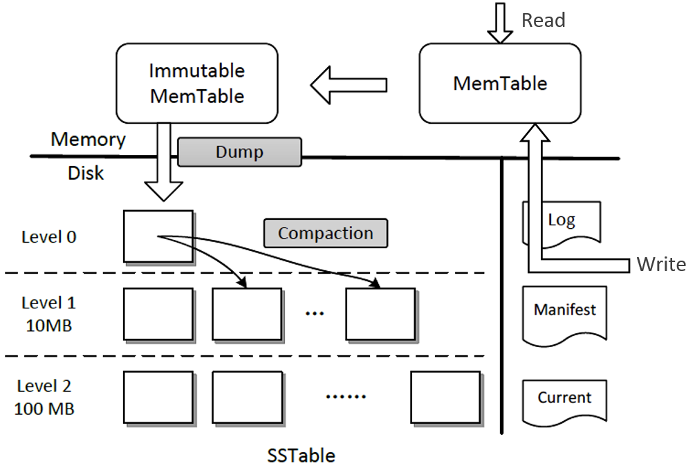
那么它要如何解决内存不足和查询的痛点问题呢？
核心解决方案是分层的设计和基于一系列对象的转换和压缩。接下来我给你分析一下上面架构图写流程和后台compaction任务：
- 首先写请求顺序写入Log文件(WAL)；
- 更新内存的Memtable。leveldb Memtable后端数据结构实现是skiplist，skiplist相比平衡二叉树，实现简单却同样拥有高性能的读写；
- 当Memtable达到一定的阈值时，转换成不可变的Memtable，也就是只读不可写；
- leveldb后台Compact任务会将不可变的Memtable生成SSTable文件，它有序地存储一系列key-value数据。注意SST文件按写入时间进行了分层，Level层次越小数据越新。Manifest文件记录了各个SSTable文件处于哪个层级、它的最小与最大key范围；
- 当某个level下的SSTable文件数目超过一定阈值后，Compact任务会从这个level的SSTable中选择一个文件（level>0），将其和高一层级的level+1的SSTable文件合并；
- 注意level 0是由Immutable直接生成的，因此level 0 SSTable文件中的key-value存在相互重叠。而level > 0时，在和更高一层SSTable合并过程中，参与的SSTable文件是多个，leveldb会确保各个SSTable中的key-value不重叠。
了解完写流程，读流程也就简单了，核心步骤如下：
- 从Memtable跳跃表中查询key；
- 未找到则从Immutable中查找；
- Immutable仍未命中，则按照leveldb的分层属性，因level 0 SSTable文件是直接从Immutable生成的，level 0存在特殊性，因此你需要从level 0遍历SSTable查找key；
- level 0中若未命中，则从level 1乃至更高的层次查找。level大于0时，各个SSTable中的key是不存在相互重叠的。根据manifest记录的key-value范围信息，可快递定位到具体的SSTable。同时leveldb基于 bloom filter 实现了快速筛选SSTable，因此查询效率较高。
更详细原理你可以参考一下 leveldb 源码。
实现分析
从API设计、复制状态机、多存储引擎支持等几个方面你介绍了metcd架构设计后，接下来我就和你重点介绍下共识模块、状态机支持多存储引擎模块的核心实现要点。
Raft算法库
共识模块使用的是etcd Raft算法库，它是一个经过大量业务生产环境检验、具备良好可扩展性的共识算法库。
它提供了哪些接口给你使用? 如何提交一个提案，并且获取Raft共识模块输出结果呢？
Raft API
Raft作为一个库，它对外最核心的对象是一个名为 Node 的数据结构。Node表示Raft集群中的一个节点，它的输入与输出接口如下图所示，下面我重点和你介绍它的几个接口功能：
- Campaign，状态转换成Candidate，发起新一轮Leader选举；
- Propose，提交提案接口；
- Ready，Raft状态机输出接口，它的返回是一个输出Ready数据结构类型的管道，应用需要监听此管道，获取Ready数据，处理其中的各个消息（如持久化未提交的日志条目到WAL中，发送消息给其他节点等）；
- Advance，通知Raft状态机，应用已处理上一个输出的Ready数据，等待发送下一个Ready数据；
- TransferLeaderShip，尝试将Leader转移到某个节点；
- Step，向Raft状态机提交收到的消息，比如当Leader广播完MsgApp消息给Follower节点后，Leader收到Follower节点回复的MsgAppResp消息时，就通过Step接口将此消息提交给Raft状态机驱动其工作；
- ReadIndex，用于实现线性读。
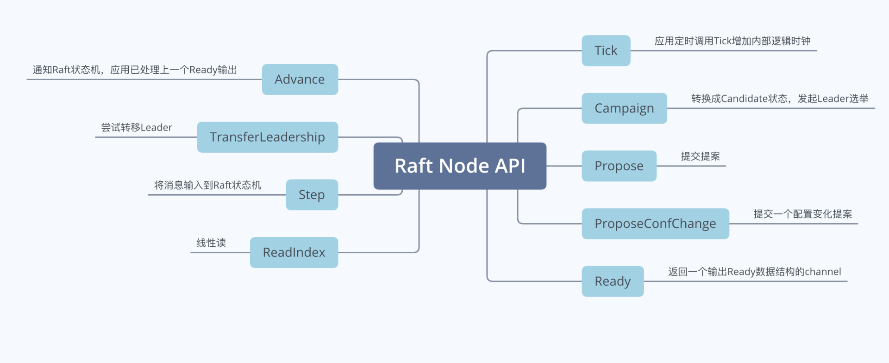
上面提到的Raft状态机的输出 Ready结构 含有哪些信息呢? 下图是其详细字段，含义如下：
- SoftState，软状态。包括集群Leader和节点状态，不需要持久化到WAL；
- pb.HardState，硬状态。与软状态相反，包括了节点当前Term、Vote等信息，需要持久化到WAL中；
- ReadStates，用于线性一致性读；
- Entries，在向其他节点发送消息之前需持久化到WAL中；
- Messages，持久化Entries后，发送给其他节点的消息；
- Committed Entries，已提交的日志条目，需要应用到存储状态机中；
- Snapshot，快照需保存到持久化存储中；
- MustSync，HardState和Entries是否要持久化到WAL中；
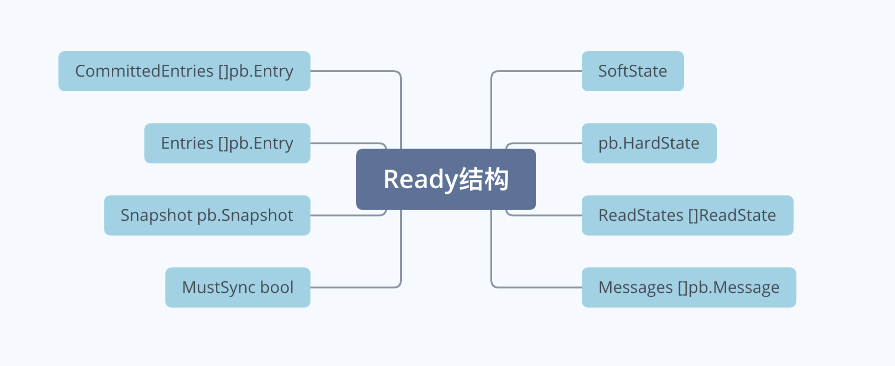
了解完API后，我们接下来继续看看代码如何使用Raft的Node API。
正如我在 04 中和你介绍的，etcd Raft库的设计抽象了网络、Raft日志存储等模块，它本身并不会进行网络、存储相关的操作，上层应用需结合自己业务场景选择内置的模块或自定义实现网络、存储、日志等模块。
因此我们在使用Raft库时，需要先自定义好相关网络、存储等模块，再结合上面介绍的Raft Node API，就可以完成一个Node的核心操作了。其数据结构定义如下：
// A key-value stream backed by raft
type raftNode struct {
proposeC <-chan string // proposed messages (k,v)
confChangeC <-chan raftpb.ConfChange // proposed cluster config changes
commitC chan<- *string // entries committed to log (k,v)
errorC chan<- error // errors from raft session
id int // client ID for raft session
......
node raft.Node
raftStorage *raft.MemoryStorage
wal *wal.WAL
transport *rafthttp.Transport
}
这个数据结构名字叫raftNode，它表示Raft集群中的一个节点。它是由我们业务应用层设计的一个组合结构。从结构体定义中你可以看到它包含了Raft核心数据结构Node(raft.Node)、Raft日志条目内存存储模块(raft.MemoryStorage）、WAL持久化模块(wal.WAL)以及网络模块(rafthttp.Transport)。
同时，它提供了三个核心的管道与业务逻辑模块、存储状态机交互：
- proposeC，它用来接收client发送的写请求提案消息；
- confChangeC，它用来接收集群配置变化消息；
- commitC，它用来输出Raft共识模块已提交的日志条目消息。
在metcd项目中因为我们是直接基于raftexample定制开发，因此日志持久化存储、网络都使用的是etcd自带的WAL和rafthttp模块。
WAL 模块中提供了核心的保存未持久化的日志条目和快照功能接口，你可以参考 03 节写请求中我和你介绍的原理。
rafthttp 模块基于HTTP协议提供了各个节点间的消息发送能力，metcd使用如下：
rc.transport = &rafthttp.Transport{
Logger: zap.NewExample(),
ID: types.ID(rc.id),
ClusterID: 0x1000,
Raft: rc,
ServerStats: stats.NewServerStats("", ""),
LeaderStats: stats.NewLeaderStats(strconv.Itoa(rc.id)),
ErrorC: make(chan error),
}
搞清楚Raft模块的输入、输出API，设计好raftNode结构，复用etcd的WAL、网络等模块后，接下来我们就只需要实现如下两个循环逻辑，处理业务层发送给proposeC和confChangeC消息、将Raft的Node输出Ready结构进行相对应的处理即可。精简后的代码如下所示：
func (rc *raftNode) serveChannels() {
// send proposals over raft
go func() {
confChangeCount := uint64(0)
for rc.proposeC != nil && rc.confChangeC != nil {
select {
case prop, ok := <-rc.proposeC:
if !ok {
rc.proposeC = nil
} else {
// blocks until accepted by raft state machine
rc.node.Propose(context.TODO(), []byte(prop))
}
case cc, ok := <-rc.confChangeC:
if !ok {
rc.confChangeC = nil
} else {
confChangeCount++
cc.ID = confChangeCount
rc.node.ProposeConfChange(context.TODO(), cc)
}
}
}
}()
// event loop on raft state machine updates
for {
select {
case <-ticker.C:
rc.node.Tick()
// store raft entries to wal, then publish over commit channel
case rd := <-rc.node.Ready():
rc.wal.Save(rd.HardState, rd.Entries)
if !raft.IsEmptySnap(rd.Snapshot) {
rc.saveSnap(rd.Snapshot)
rc.raftStorage.ApplySnapshot(rd.Snapshot)
rc.publishSnapshot(rd.Snapshot)
}
rc.raftStorage.Append(rd.Entries)
rc.transport.Send(rd.Messages)
if ok := rc.publishEntries(rc.entriesToApply(rd.CommittedEntries)); !ok {
rc.stop()
return
}
rc.maybeTriggerSnapshot()
rc.node.Advance()
}
}
}
代码简要分析如下：
- 从proposeC中取出提案消息，通过raft.Node.Propose API提交提案；
- 从confChangeC取出配置变更消息，通过raft.Node.ProposeConfChange API提交配置变化消息；
- 从raft.Node中获取Raft算法状态机输出到Ready结构中，将rd.Entries和rd.HardState通过WAL模块持久化，将rd.Messages通过rafthttp模块，发送给其他节点。将rd.CommittedEntries应用到业务存储状态机。
以上就是Raft实现的核心流程，接下来我来和你聊聊业务存储状态机。
支持多存储引擎
在整体架构设计时，我和你介绍了为了使metcd项目能支撑多存储引擎，我们将KVStore进行了抽象化设计，因此我们只需要实现各个存储引擎相对应的API即可。
这里我以Put接口为案例，分别给你介绍下各个存储引擎的实现。
boltdb
首先是boltdb存储引擎，它的实现如下，你也可以去 10 里回顾一下它的API和原理。
func (s *boltdbKVStore) Put(key, value string) error {
s.mu.Lock()
defer s.mu.Unlock()
// Start a writable transaction.
tx, err := s.db.Begin(true)
if err != nil {
return err
}
defer tx.Rollback()
// Use the transaction...
bucket, err := tx.CreateBucketIfNotExists([]byte("keys"))
if err != nil {
log.Printf("failed to put key %s, value %s, err is %v", key, value, err)
return err
}
err = bucket.Put([]byte(key), []byte(value))
if err != nil {
log.Printf("failed to put key %s, value %s, err is %v", key, value, err)
return err
}
// Commit the transaction and check for error.
if err := tx.Commit(); err != nil {
log.Printf("failed to commit transaction, key %s, err is %v", key, err)
return err
}
log.Printf("backend:%s,put key:%s,value:%s succ", s.config.backend, key, value)
return nil
leveldb
其次是leveldb，我们使用的是 goleveldb，它基于Google开源的c++ leveldb 版本实现。它提供的常用API如下所示。
- 通过OpenFile API创建或打开一个leveldb数据库。
db, err := leveldb.OpenFile("path/to/db", nil)
...
defer db.Close()
- 通过DB.Get/Put/Delete API操作数据。
data, err := db.Get([]byte("key"), nil)
...
err = db.Put([]byte("key"), []byte("value"), nil)
...
err = db.Delete([]byte("key"), nil)
...
了解其接口后，通过goleveldb的库，client调用就非常简单了，下面是metcd项目中，leveldb存储引擎Put接口的实现。
func (s *leveldbKVStore) Put(key, value string) error {
err := s.db.Put([]byte(key), []byte(value), nil)
if err != nil {
log.Printf("failed to put key %s, value %s, err is %v", key, value, err)
return err
}
log.Printf("backend:%s,put key:%s,value:%s succ", s.config.backend, key, value)
return nil
}
读写流程
介绍完在metcd项目中如何使用Raft共识模块、支持多存储引擎后，我们再从整体上介绍下在metcd中写入和读取一个key-value的流程。
写流程
当你通过如下curl命令发起一个写操作时，写流程如下面架构图序号所示:
curl -L http://127.0.0.1:3379/hello -XPUT -d world
- client通过curl发送HTTP PUT请求到server；
- server收到后，将消息写入到KVStore的ProposeC管道；
- raftNode循环逻辑将消息通过Raft模块的Propose接口提交；
- Raft模块输出Ready结构，server将日志条目持久化后，并发送给其他节点；
- 集群多数节点持久化此日志条目后，这个日志条目被提交给存储状态机KVStore执行；
- KVStore根据启动的backend存储引擎名称，调用对应的Put接口即可。
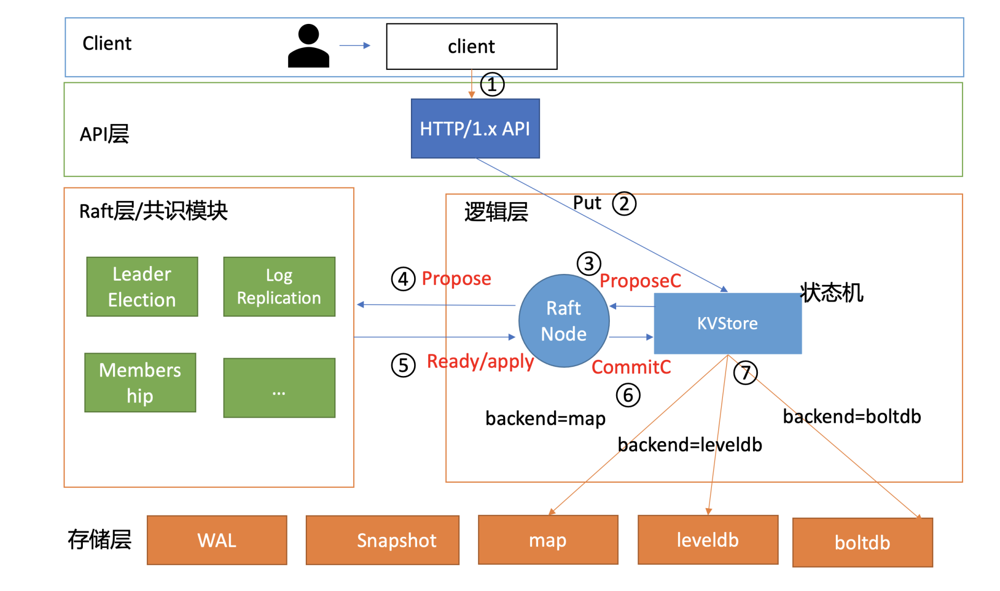
读流程
当你通过如下curl命令发起一个读操作时，读流程如下面架构图序号所示：
curl -L http://127.0.0.1:3379/hello
world
- client通过curl发送HTTP Get请求到server；
- server收到后，根据KVStore的存储引擎，从后端查询出对应的key-value数据。
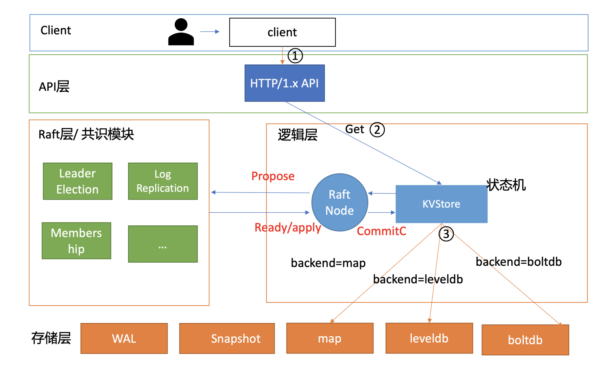
Kubernetes
Kubernetes基础应用：创建一个Pod背后etcd发生了什么？ （原附件待补，文档暂未上线）
Kubernetes高级应用：如何优化业务场景使etcd能支撑上万节点集群？ （原附件待补，文档暂未上线）
分布式锁：为什么基于etcd实现分布式锁比Redis锁更安全？
在软件开发过程中，我们经常会遇到各种场景要求对共享资源进行互斥操作，否则整个系统的数据一致性就会出现问题。典型场景如商品库存操作、Kubernertes调度器为Pod分配运行的Node。
那要如何实现对共享资源进行互斥操作呢？
锁就是其中一个非常通用的解决方案。在单节点多线程环境，你使用本地的互斥锁就可以完成资源的互斥操作。然而单节点存在单点故障，为了保证服务高可用，你需要多节点部署。在多节点部署的分布式架构中，你就需要使用分布式锁来解决资源互斥操作了。
但是为什么有的业务使用了分布式锁还会出现各种严重超卖事故呢？分布式锁的实现和使用过程需要注意什么？
今天，我就和你聊聊分布式锁背后的故事，我将通过一个茅台超卖的案例，为你介绍基于Redis实现的分布锁优缺点，引出分布式锁的核心要素，对比分布式锁的几种业界典型实现方案，深入剖析etcd分布式锁的实现。
希望通过这节课，让你了解etcd分布式锁的应用场景、核心原理，在业务开发过程中，优雅、合理的使用分布式锁去解决各类资源互斥、并发操作问题。
从茅台超卖案例看分布式锁要素
首先我们从去年一个因Redis分布式锁实现问题导致 茅台超卖案例 说起，在这个网友分享的真实案例中，因茅台的稀缺性，事件最终定级为P0级生产事故，后果影响严重。
那么它是如何导致超卖的呢？
首先和你简单介绍下此案例中的Redis简易分布式锁实现方案，它使用了Redis SET命令来实现。
SET key value [EX seconds|PX milliseconds|EXAT timestamp|PXAT milliseconds-timestamp|KEEPTTL] [NX|XX]
[GET]
简单给你介绍下SET命令重点参数含义：
EX设置过期时间，单位秒；NX当key不存在的时候，才设置key；XX当key存在的时候，才设置key。
此业务就是基于Set key value EX 10 NX命令来实现的分布式锁，并通过JAVA的try-finally语句，执行Del key语句来释放锁，简易流程如下：
# 对资源key加锁，key不存在时创建，并且设置，10秒自动过期
SET key value EX 10 NX
业务逻辑流程1，校验用户身份
业务逻辑流程2，查询并校验库存(get and compare)
业务逻辑流程3，库存>0，扣减库存(Decr stock)，生成秒杀茅台订单
# 释放锁
Del key
以上流程中其实存在以下思考点:
- NX参数有什么作用?
- 为什么需要原子的设置key及过期时间？
- 为什么基于Set key value EX 10 NX命令还出现了超卖呢?
- 为什么大家都比较喜欢使用Redis作为分布式锁实现？
首先来看第一个问题，NX参数的作用。NX参数是为了保证当分布式锁不存在时，只有一个client能写入此key成功，获取到此锁。我们使用分布式锁的目的就是希望在高并发系统中，有一种互斥机制来防止彼此相互干扰，保证数据的一致性。
因此分布式锁的第一核心要素就是互斥性、安全性。在同一时间内，不允许多个client同时获得锁。
再看第二个问题，假设我们未设置key自动过期时间，在Set key value NX后，如果程序crash或者发生网络分区后无法与Redis节点通信，毫无疑问其他client将永远无法获得锁。这将导致死锁，服务出现中断。
有的同学意识到这个问题后，使用如下SETNX和EXPIRE命令去设置key和过期时间，这也是不正确的，因为你无法保证SETNX和EXPIRE命令的原子性。
# 对资源key加锁，key不存在时创建
SETNX key value
# 设置KEY过期时间
EXPIRE key 10
业务逻辑流程
# 释放锁
Del key
这就是分布式锁第二个核心要素，活性。在实现分布式锁的过程中要考虑到client可能会出现crash或者网络分区，你需要原子申请分布式锁及设置锁的自动过期时间，通过过期、超时等机制自动释放锁，避免出现死锁，导致业务中断。
再看第三个问题，为什么使用了Set key value EX 10 NX命令，还出现了超卖呢？
原来是抢购活动开始后，加锁逻辑中的业务流程1访问的用户身份服务出现了高负载，导致阻塞在校验用户身份流程中(超时30秒)，然而锁10秒后就自动过期了，因此其他client能获取到锁。关键是阻塞的请求执行完后，它又把其他client的锁释放掉了，导致进入一个恶性循环。
因此申请锁时，写入的value应确保唯一性（随机值等）。client在释放锁时，应通过Lua脚本原子校验此锁的value与自己写入的value一致，若一致才能执行释放工作。
更关键的是库存校验是通过get and compare方式，它压根就无法防止超卖。正确的解决方案应该是通过LUA脚本实现Redis比较库存、扣减库存操作的原子性（或者在每次只能抢购一个的情况下，通过判断 Redis Decr命令 的返回值即可。此命令会返回扣减后的最新库存，若小于0则表示超卖）。
从这个问题中我们可以看到，分布式锁实现具备一定的复杂度，它不仅依赖存储服务提供的核心机制，同时依赖业务领域的实现。无论是遭遇高负载、还是宕机、网络分区等故障，都需确保锁的互斥性、安全性，否则就会出现严重的超卖生产事故。
再看最后一个问题，为什么大家都比较喜欢使用Redis做分布式锁的实现呢?
考虑到在秒杀等业务场景上存在大量的瞬间、高并发请求，加锁与释放锁的过程应是高性能、高可用的。而Redis核心优点就是快、简单，是随处可见的基础设施，部署、使用也及其方便，因此广受开发者欢迎。
这就是分布式锁第三个核心要素，高性能、高可用。加锁、释放锁的过程性能开销要尽量低，同时要保证高可用，确保业务不会出现中断。
那么除了以上案例中人为实现问题导致的锁不安全因素外，基于Redis实现的以上分布式锁还有哪些安全性问题呢？
Redis分布式锁问题
我们从茅台超卖案例中为你总结出的分布式核心要素（互斥性、安全性、活性、高可用、高性能）说起。
首先，如果我们的分布式锁跑在单节点的Redis Master节点上，那么它就存在单点故障，无法保证分布式锁的高可用。
于是我们需要一个主备版的Redis服务，至少具备一个Slave节点。
我们又知道Redis是基于主备异步复制协议实现的Master-Slave数据同步，如下图所示，若client A执行SET key value EX 10 NX命令，redis-server返回给client A成功后，Redis Master节点突然出现crash等异常，这时候Redis Slave节点还未收到此命令的同步。
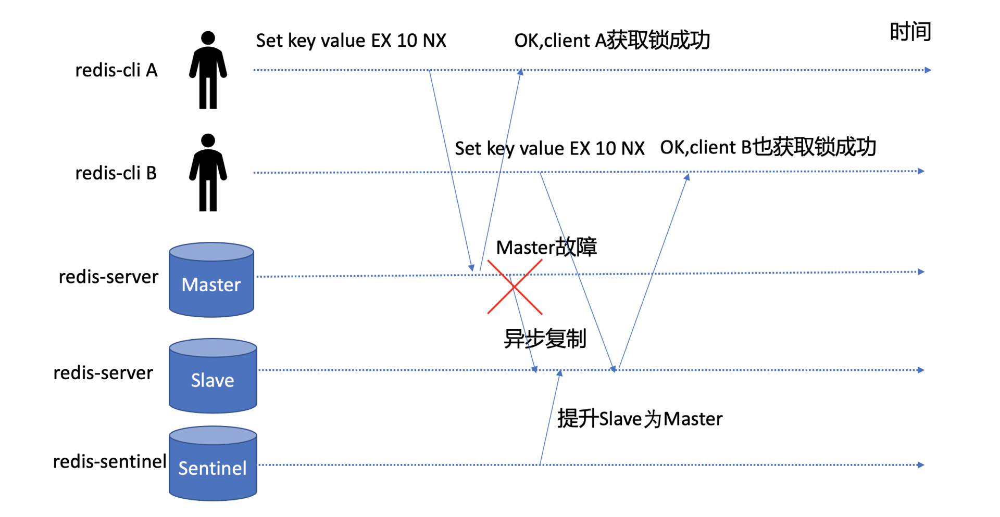
若你部署了Redis Sentinel等主备切换服务，那么它就会以Slave节点提升为主，此时Slave节点因并未执行SET key value EX 10 NX命令，因此它收到client B发起的加锁的此命令后，它也会返回成功给client。
那么在同一时刻，集群就出现了两个client同时获得锁，分布式锁的互斥性、安全性就被破坏了。
除了主备切换可能会导致基于Redis实现的分布式锁出现安全性问题，在发生网络分区等场景下也可能会导致出现脑裂，Redis集群出现多个Master，进而也会导致多个client同时获得锁。
如下图所示，Master节点在可用区1，Slave节点在可用区2，当可用区1和可用区2发生网络分区后，部署在可用区2的Redis Sentinel服务就会将可用区2的Slave提升为Master，而此时可用区1的Master也在对外提供服务。因此集群就出现了脑裂，出现了两个Master，都可对外提供分布式锁申请与释放服务，分布式锁的互斥性被严重破坏。
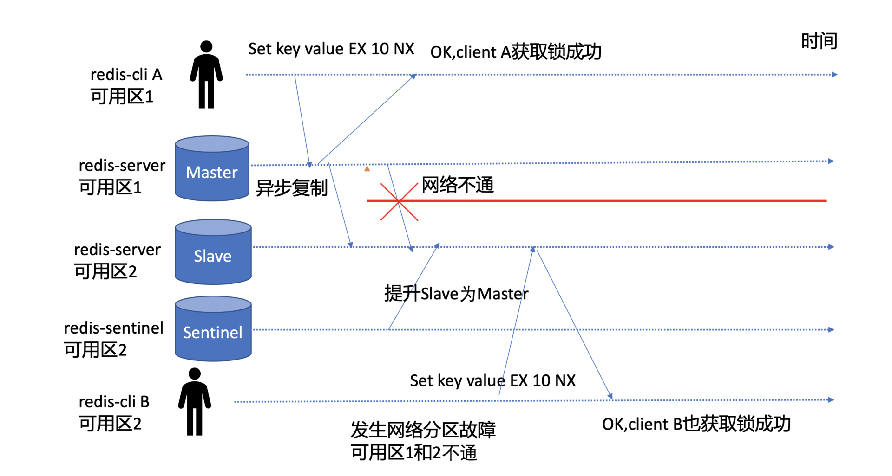
主备切换、脑裂是Redis分布式锁的两个典型不安全的因素，本质原因是Redis为了满足高性能，采用了主备异步复制协议，同时也与负责主备切换的Redis Sentinel服务是否合理部署有关。
有没有其他方案解决呢？
当然有，Redis作者为了解决SET key value [EX] 10 [NX]命令实现分布式锁不安全的问题，提出了 RedLock算法。它是基于多个独立的Redis Master节点的一种实现（一般为5）。client依次向各个节点申请锁，若能从多数个节点中申请锁成功并满足一些条件限制，那么client就能获取锁成功。
它通过独立的N个Master节点，避免了使用主备异步复制协议的缺陷，只要多数Redis节点正常就能正常工作，显著提升了分布式锁的安全性、可用性。
但是，它的实现建立在一个不安全的系统模型上的，它依赖系统时间，当时钟发生跳跃时，也可能会出现安全性问题。你要有兴趣的话，可以详细阅读下分布式存储专家Martin对 RedLock的分析文章，Redis作者的也专门写了 一篇文章进行了反驳。
分布式锁常见实现方案
了解完Redis分布式锁的一系列问题和实现方案后，我们再看看还有哪些典型的分布式锁实现。
除了Redis分布式锁，其他使用最广的应该是ZooKeeper分布式锁和etcd分布式锁。
ZooKeeper也是一个典型的分布式元数据存储服务，它的分布式锁实现基于ZooKeeper的临时节点和顺序特性。
首先什么是临时节点呢？
临时节点具备数据自动删除的功能。当client与ZooKeeper连接和session断掉时，相应的临时节点就会被删除。
其次ZooKeeper也提供了Watch特性可监听key的数据变化。
Lock
1 n = create(l + “/lock-”, EPHEMERAL|SEQUENTIAL)
2 C = getChildren(l, false)
3 if n is lowest znode in C, exit
4 p = znode in C ordered just before n
5 if exists(p, true) wait for watch event
6 goto 2
Unlock
1 delete(n)
接下来我重点给你介绍一下基于etcd的分布式锁实现。
etcd分布式锁实现
那么基于etcd实现的分布式锁是如何确保安全性、互斥性、活性的呢？
事务与锁的安全性
从Redis案例中我们可以看到，加锁的过程需要确保安全性、互斥性。比如，当key不存在时才能创建，否则查询相关key信息，而etcd提供的事务能力正好可以满足我们的诉求。
正如我在 09 中给你介绍的事务特性，它由IF语句、Then语句、Else语句组成。其中在IF语句中，支持比较key的是修改版本号mod_revision和创建版本号create_revision。
在分布式锁场景，你就可以通过key的创建版本号create_revision来检查key是否已存在，因为一个key不存在的话，它的create_revision版本号就是0。
若create_revision是0，你就可发起put操作创建相关key，具体代码如下:
txn := client.Txn(ctx).If(v3.Compare(v3.CreateRevision(k),
"=", 0))
你要注意的是，实现分布式锁的方案有多种，比如你可以通过client是否成功创建一个固定的key，来判断此client是否获得锁，你也可以通过多个client创建prefix相同，名称不一样的key，哪个key的revision最小，最终就是它获得锁。至于谁优谁劣，我作为思考题的一部分，留给大家一起讨论。
相比Redis基于主备异步复制导致锁的安全性问题，etcd是基于Raft共识算法实现的，一个写请求需要经过集群多数节点确认。因此一旦分布式锁申请返回给client成功后，它一定是持久化到了集群多数节点上，不会出现Redis主备异步复制可能导致丢数据的问题，具备更高的安全性。
Lease与锁的活性
通过事务实现原子的检查key是否存在、创建key后，我们确保了分布式锁的安全性、互斥性。那么etcd是如何确保锁的活性呢? 也就是发生任何故障，都可避免出现死锁呢？
正如在 06 租约特性中和你介绍的，Lease就是一种活性检测机制，它提供了检测各个客户端存活的能力。你的业务client需定期向etcd服务发送"特殊心跳"汇报健康状态，若你未正常发送心跳，并超过和etcd服务约定的最大存活时间后，就会被etcd服务移除此Lease和其关联的数据。
通过Lease机制就优雅地解决了client出现crash故障、client与etcd集群网络出现隔离等各类故障场景下的死锁问题。一旦超过Lease TTL，它就能自动被释放，确保了其他client在TTL过期后能正常申请锁，保障了业务的可用性。
具体代码如下:
txn := client.Txn(ctx).If(v3.Compare(v3.CreateRevision(k), "=", 0))
txn = txn.Then(v3.OpPut(k, val, v3.WithLease(s.Lease())))
txn = txn.Else(v3.OpGet(k))
resp, err := txn.Commit()
if err != nil {
return err
}
Watch与锁的可用性
当一个持有锁的client crash故障后，其他client如何快速感知到此锁失效了，快速获得锁呢，最大程度降低锁的不可用时间呢？
答案是Watch特性。正如在08 Watch特性中和你介绍的，Watch提供了高效的数据监听能力。当其他client收到Watch Delete事件后，就可快速判断自己是否有资格获得锁，极大减少了锁的不可用时间。
具体代码如下所示：
var wr v3.WatchResponse
wch := client.Watch(cctx, key, v3.WithRev(rev))
for wr = range wch {
for _, ev := range wr.Events {
if ev.Type == mvccpb.DELETE {
return nil
}
}
}
etcd自带的concurrency包
为了帮助你简化分布式锁、分布式选举、分布式事务的实现，etcd社区提供了一个名为concurrency包帮助你更简单、正确地使用分布式锁、分布式选举。
下面我简单为你介绍下分布式锁 concurrency 包的使用和实现，它的使用非常简单，如下代码所示，核心流程如下：
- 首先通过concurrency.NewSession方法创建Session，本质是创建了一个TTL为10的Lease。
- 其次得到session对象后，通过concurrency.NewMutex创建了一个mutex对象，包含Lease、key prefix等信息。
- 然后通过mutex对象的Lock方法尝试获取锁。
- 最后使用结束，可通过mutex对象的Unlock方法释放锁。
cli, err := clientv3.New(clientv3.Config{Endpoints: endpoints})
if err != nil {
log.Fatal(err)
}
defer cli.Close()
// create two separate sessions for lock competition
s1, err := concurrency.NewSession(cli, concurrency.WithTTL(10))
if err != nil {
log.Fatal(err)
}
defer s1.Close()
m1 := concurrency.NewMutex(s1, "/my-lock/")
// acquire lock for s1
if err := m1.Lock(context.TODO()); err != nil {
log.Fatal(err)
}
fmt.Println("acquired lock for s1")
if err := m1.Unlock(context.TODO()); err != nil {
log.Fatal(err)
}
fmt.Println("released lock for s1")
那么mutex对象的Lock方法是如何加锁的呢？
核心还是使用了我们上面介绍的事务和Lease特性，当CreateRevision为0时，它会创建一个prefix为/my-lock的key（ /my-lock + LeaseID)，并获取到/my-lock prefix下面最早创建的一个key（revision最小），分布式锁最终是由写入此key的client获得，其他client则进入等待模式。
详细代码如下：
m.myKey = fmt.Sprintf("%s%x", m.pfx, s.Lease())
cmp := v3.Compare(v3.CreateRevision(m.myKey), "=", 0)
// put self in lock waiters via myKey; oldest waiter holds lock
put := v3.OpPut(m.myKey, "", v3.WithLease(s.Lease()))
// reuse key in case this session already holds the lock
get := v3.OpGet(m.myKey)
// fetch current holder to complete uncontended path with only one RPC
getOwner := v3.OpGet(m.pfx, v3.WithFirstCreate()...)
resp, err := client.Txn(ctx).If(cmp).Then(put, getOwner).Else(get, getOwner).Commit()
if err != nil {
return err
}
那未获得锁的client是如何等待的呢?
答案是通过Watch机制各自监听prefix相同，revision比自己小的key，因为只有revision比自己小的key释放锁，我才能有机会，获得锁，如下代码所示，其中waitDelete会使用我们上面的介绍的Watch去监听比自己小的key，详细代码可参考 concurrency mutex 的实现。
// wait for deletion revisions prior to myKey
hdr, werr := waitDeletes(ctx, client, m.pfx, m.myRev-1)
// release lock key if wait failed
if werr != nil {
m.Unlock(client.Ctx())
} else {
m.hdr = hdr
}
配置及服务发现：解析etcd在API Gateway开源项目中应用
在软件开发的过程中，为了提升代码的灵活性和开发效率，我们大量使用配置去控制程序的运行行为。
从简单的数据库账号密码配置，到 confd 支持以etcd为后端存储的本地配置及模板管理，再到 Apache APISIX 等API Gateway项目使用etcd存储服务配置、路由信息等，最后到Kubernetes更实现了Secret和ConfigMap资源对象来解决配置管理的问题。
那么它们是如何实现实时、动态调整服务配置而不需要重启相关服务的呢？
今天我就和你聊聊etcd在配置和服务发现场景中的应用。我将以开源项目Apache APISIX为例，为你分析服务发现的原理，带你了解etcd的key-value模型，Watch机制，鉴权机制，Lease特性，事务特性在其中的应用。
希望通过这节课，让你了解etcd在配置系统和服务发现场景工作原理，帮助你选型适合业务场景的配置系统、服务发现组件。同时，在使用Apache APISIX等开源项目过程中遇到etcd相关问题时，你能独立排查、分析，并向社区提交issue和PR解决。
服务发现
首先和你聊聊服务发现，服务发现是指什么？为什么需要它呢?
为了搞懂这个问题，我首先和你分享下程序部署架构的演进。
单体架构
在早期软件开发时使用的是单体架构，也就是所有功能耦合在同一个项目中，统一构建、测试、发布。单体架构在项目刚启动的时候，架构简单、开发效率高，比较容易部署、测试。但是随着项目不断增大，它具有若干缺点，比如：
- 所有功能耦合在同一个项目中，修复一个小Bug就需要发布整个大工程项目，增大引入问题风险。同时随着开发人员增多、单体项目的代码增长、各模块堆砌在一起、代码质量参差不齐，内部复杂度会越来越高，可维护性差。
- 无法按需针对仅出现瓶颈的功能模块进行弹性扩容，只能作为一个整体继续扩展，因此扩展性较差。
- 一旦单体应用宕机，将导致所有服务不可用，因此可用性较差。
分布式及微服务架构
如何解决以上痛点呢？
当然是将单体应用进行拆分，大而化小。如何拆分呢？ 这里我就以一个我曾经参与重构建设的电商系统为案例给你分析一下。在一个单体架构中，完整的电商系统应包括如下模块：
- 商城系统，负责用户登录、查看及搜索商品、购物车商品管理、优惠券管理、订单管理、支付等功能。
- 物流及仓储系统，根据用户订单，进行发货、退货、换货等一系列仓储、物流管理。
- 其他客服系统、客户管理系统等。
因此在分布式架构中，你可以按整体功能，将单体应用垂直拆分成以上三大功能模块，各个功能模块可以选择不同的技术栈实现，按需弹性扩缩容，如下图所示。
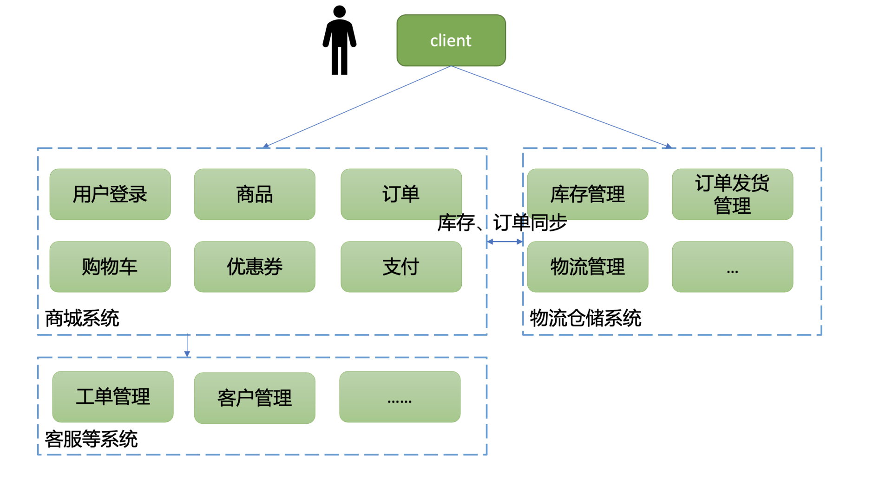
那什么又是微服务架构呢？
它是对各个功能模块进行更细立度的拆分，比如商城系统模块可以拆分成：
- 用户鉴权模块；
- 商品模块；
- 购物车模块；
- 优惠券模块；
- 支付模块；
- ……
在微服务架构中，每个模块职责更单一、独立部署、开发迭代快，如下图所示。
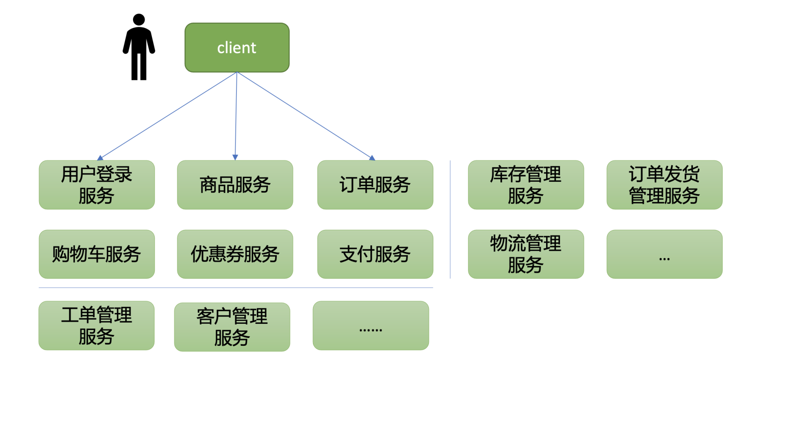
那么在分布式及微服务架构中，各个模块之间如何及时知道对方网络地址与端口、协议，进行接口调用呢？
为什么需要服务发现中间件?
其实这个知道的过程，就是服务发现。在早期的时候我们往往通过硬编码、配置文件声明各个依赖模块的网络地址、端口，然而这种方式在分布式及微服务架构中，其运维效率、服务可用性是远远不够的。
那么我们能否实现通过一个特殊服务就查询到各个服务的后端部署地址呢？ 各服务启动的时候，就自动将IP和Port、协议等信息注册到特殊服务上，当某服务出现异常的时候，特殊服务就自动删除异常实例信息？
是的，当然可以，这个特殊服务就是注册中心服务，你可以基于etcd、ZooKeeper、consul等实现。
etcd服务发现原理
那么如何基于etcd实现服务发现呢?
下面我给出了一个通用的服务发现原理架构图，通过此图，为你介绍下服务发现的基本原理。详细如下：
- 整体上分为四层，client层、proxy层(可选)、业务server、etcd存储层组成。引入proxy层的原因是使client更轻、逻辑更简单，无需直接访问存储层，同时可通过proxy层支持各种协议。
- client层通过负载均衡访问proxy组件。proxy组件启动的时候，通过etcd的Range RPC方法从etcd读取初始化服务配置数据，随后通过Watch接口持续监听后端业务server扩缩容变化，实时修改路由。
- proxy组件收到client的请求后，它根据从etcd读取到的对应服务的路由配置、负载均衡算法（比如Round-robin）转发到对应的业务server。
- 业务server启动的时候，通过etcd的写接口Txn/Put等，注册自身地址信息、协议到高可用的etcd集群上。业务server缩容、故障时，对应的key应能自动从etcd集群删除，因此相关key需要关联lease信息，设置一个合理的TTL，并定时发送keepalive请求给Leader续租，以防止租约及key被淘汰。
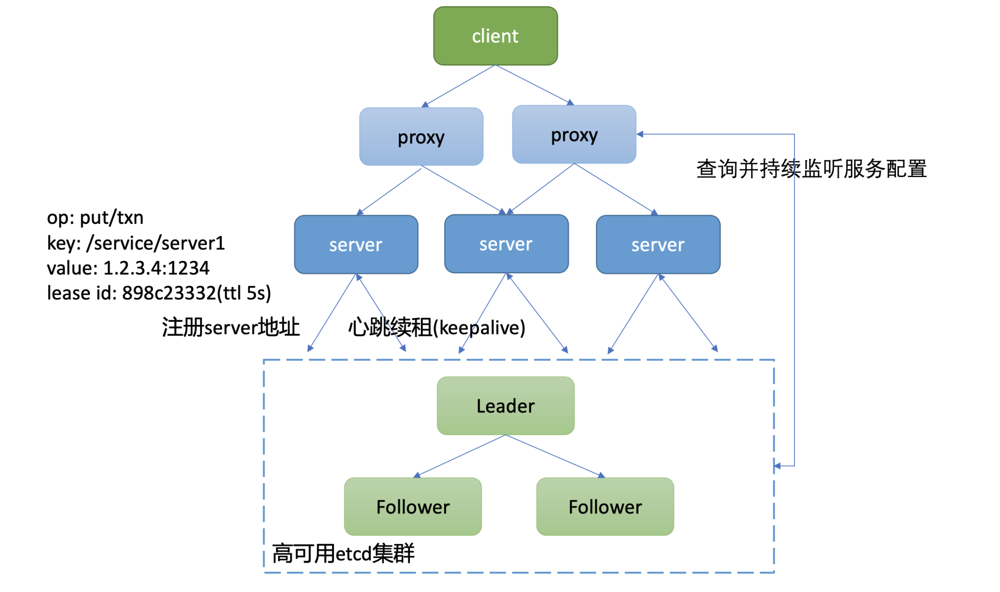
当然，在分布式及微服务架构中，我们面对的问题不仅仅是服务发现，还包括如下痛点：
- 限速；
- 鉴权；
- 安全；
- 日志；
- 监控；
- 丰富的发布策略；
- 链路追踪；
- ......
为了解决以上痛点，各大公司及社区开发者推出了大量的开源项目。这里我就以国内开发者广泛使用的Apache APISIX项目为例，为你分析etcd在其中的应用，了解下它是怎么玩转服务发现的。
Apache APISIX原理
Apache APISIX它具备哪些功能呢？
它的本质是一个无状态、高性能、实时、动态、可水平扩展的API网关。核心原理就是基于你配置的服务信息、路由规则等信息，将收到的请求通过一系列规则后，正确转发给后端的服务。
Apache APISIX其实就是上面服务发现原理架构图中的proxy组件，如下图红色虚线框所示。
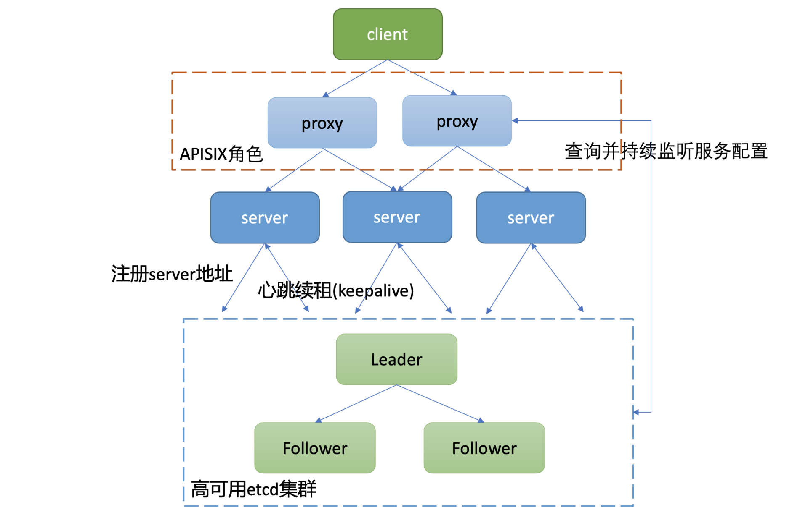
Apache APISIX详细架构图如下（ 引用自社区项目文档）。从图中你可以看到，它由控制面和数据面组成。
控制面顾名思义，就是你通过Admin API下发服务、路由、安全配置的操作。控制面默认的服务发现存储是etcd，当然也支持consul、nacos等。
你如果没有使用过Apache APISIX的话，可以参考下这个 example，快速、直观的了解下Apache APISIX是如何通过Admin API下发服务和路由配置的。
数据面是在实现基于服务路由信息数据转发的基础上，提供了限速、鉴权、安全、日志等一系列功能，也就是解决了我们上面提的分布式及微服务架构中的典型痛点。
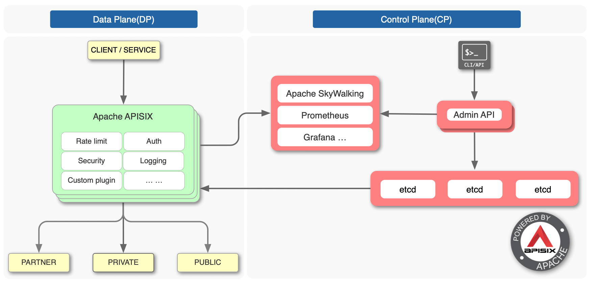
那么当我们通过控制面API新增一个服务时，Apache APISIX是是如何实现实时、动态调整服务配置，而不需要重启网关服务的呢？
下面，我就和你聊聊etcd在Apache APISIX项目中的应用。
etcd在Apache APISIX中的应用
在搞懂这个问题之前，我们先看看Apache APISIX在etcd中，都存储了哪些数据呢？它的数据存储格式是怎样的？
数据存储格式
下面我参考Apache APISIX的 example 案例（apisix:2.3），通过Admin API新增了两个服务、路由规则后，执行如下查看etcd所有key的命令：
etcdctl get "" --prefix --keys-only
etcd输出结果如下：
/apisix/consumers/
/apisix/data_plane/server_info/f7285805-73e9-4ce4-acc6-a38d619afdc3
/apisix/global_rules/
/apisix/node_status/
/apisix/plugin_metadata/
/apisix/plugins
/apisix/plugins/
/apisix/proto/
/apisix/routes/
/apisix/routes/12
/apisix/routes/22
/apisix/services/
/apisix/services/1
/apisix/services/2
/apisix/ssl/
/apisix/ssl/1
/apisix/ssl/2
/apisix/stream_routes/
/apisix/upstreams/
然后我们继续通过etcdctl get命令查看下services都存储了哪些信息呢？
root@e9d3b477ca1f:/opt/bitnami/etcd# etcdctl get /apisix/services --prefix
/apisix/services/
init_dir
/apisix/services/1
{"update_time":1614293352,"create_time":1614293352,"upstream":{"type":"roundrobin","nodes":{"172.18.5.12:80":1},"hash_on":"vars","scheme":"http","pass_host":"pass"},"id":"1"}
/apisix/services/2
{"update_time":1614293361,"create_time":1614293361,"upstream":
{"type":"roundrobin","nodes":{"172.18.5.13:80":1},"hash_on":"vars","scheme":"http","pass_host":"pass"},"id":"2"}
从中我们可以总结出如下信息：
- Apache APSIX 2.x系列版本使用的是etcd3。
- 服务、路由、ssl、插件等配置存储格式前缀是/apisix + "/" + 功能特性类型（routes/services/ssl等），我们通过Admin API添加的路由、服务等配置就保存在相应的前缀下。
- 路由和服务配置的value是个Json对象，其中服务对象包含了id、负载均衡算法、后端节点、协议等信息。
了解完Apache APISIX在etcd中的数据存储格式后，那么它是如何动态、近乎实时地感知到服务配置变化的呢？
Watch机制的应用
与Kubernetes一样，它们都是通过etcd的 Watch机制 来实现的。
Apache APISIX在启动的时候，首先会通过Range操作获取网关的配置、路由等信息，随后就通过Watch机制，获取增量变化事件。
使用Watch机制最容易犯错的地方是什么呢？
答案是不处理Watch返回的相关错误信息，比如已压缩ErrCompacted错误。Apache APISIX项目在从etcd v2中切换到etcd v3早期的时候，同样也犯了这个错误。
去年某日收到小伙伴求助，说使用Apache APISIX后，获取不到新的服务配置了，是不是etcd出什么Bug了？
经过一番交流和查看日志，发现原来是Apache APISIX未处理ErrCompacted错误导致的。根据我们 07 Watch原理的介绍，当你请求Watch的版本号已被etcd压缩后，etcd就会取消这个watcher，这时你需要重建watcher，才能继续监听到最新数据变化事件。
查清楚问题后，小伙伴向社区提交了issue反馈，随后Apache APISIX相关同学通过 PR 2687 修复了此问题，更多信息你可参考Apache APISIX访问etcd 相关实现代码文件。
鉴权机制的应用
除了Watch机制，Apache APISIX项目还使用了鉴权，毕竟配置网关是个高危操作，那它是如何使用etcd鉴权机制的呢？ etcd鉴权机制 中最容易踩的坑是什么呢？
答案是不复用client和鉴权token，频繁发起Authenticate操作，导致etcd高负载。正如我在 17 和你介绍的，一个8核32G的高配节点在100个连接时，Authenticate QPS仅为8。可想而知，你如果不复用token，那么出问题就很自然不过了。
Apache APISIX是否也踩了这个坑呢？
Apache APISIX是基于Lua构建的，使用的是 lua-resty-etcd 这个项目访问etcd，从相关 issue 反馈看，的确也踩了这个坑。社区用户反馈后，随后通过复用client、更完善的token复用机制解决了Authenticate的性能瓶颈，详细信息你可参考 PR 2932、 PR 100。
除了以上介绍的Watch机制、鉴权机制，Apache APISIX还使用了etcd的Lease特性和事务接口。
Lease特性的应用
为什么Apache APISIX项目需要Lease特性呢？
服务发现的核心工作原理是服务启动的时候将地址信息登录到注册中心，服务异常时自动从注册中心删除。
这是不是跟我们前面 05 节介绍的<Lease特性: 如何检测客户端的存活性>应用场景很匹配呢？
没错，Apache APISIX通过etcd v2的TTL特性、etcd v3的Lease特性来实现类似的效果，它提供的增加服务路由API，支持设置TTL属性，如下面所示：
# Create a route expires after 60 seconds, then it's deleted automatically
$ curl http://127.0.0.1:9080/apisix/admin/routes/2?ttl=60 -H 'X-API-KEY: <EXAMPLE_API_KEY>' -X PUT -i -d '
{
"uri": "/aa/index.html",
"upstream": {
"type": "roundrobin",
"nodes": {
"39.97.63.215:80": 1
}
}
}'
当一个路由设置非0 TTL后，Apache APISIX就会为它创建Lease，关联key，相关代码如下：
-- lease substitute ttl in v3
local res, err
if ttl then
local data, grant_err = etcd_cli:grant(tonumber(ttl))
if not data then
return nil, grant_err
end
res, err = etcd_cli:set(prefix .. key, value, {prev_kv = true, lease = data.body.ID})
else
res, err = etcd_cli:set(prefix .. key, value, {prev_kv = true})
end
事务特性的应用
介绍完Lease特性在Apache APISIX项目中的应用后，我们再来思考两个问题。为什么它还依赖etcd的事务特性呢？简单的执行put接口有什么问题？
答案是它跟Kubernetes是一样的使用目的。使用事务是为了防止并发场景下的数据写冲突，比如你可能同时发起两个Patch Admin API去修改配置等。如果简单地使用put接口，就会导致第一个写请求的结果被覆盖。
Apache APISIX是如何使用事务接口提供的乐观锁机制去解决并发冲突的问题呢？
核心依然是我们前面课程中一直强调的mod_revision，它会比较事务提交时的mod_revision与预期是否一致，一致才能执行put操作，Apache APISIX相关使用代码如下：
local compare = {
{
key = key,
target = "MOD",
result = "EQUAL",
mod_revision = mod_revision,
}
}
local success = {
{
requestPut = {
key = key,
value = value,
lease = lease_id,
}
}
}
local res, err = etcd_cli:txn(compare, success)
if not res then
return nil, err
end
关于Apache APISIX事务特性的引入、背景以及更详细的实现，你也可以参考 PR 2216。
选型：etcd/ZooKeeper/Consul等我们该如何选择？
在软件开发过程中，当我们需要解决配置、服务发现、分布式锁等业务痛点，在面对 etcd、 ZooKeeper、 Consul、 Nacos 等一系列候选开源项目时，我们应该如何结合自己的业务场景，选择合适的分布式协调服务呢？
今天，我就和你聊聊主要分布式协调服务的对比。我将从基本架构、共识算法、数据模型、重点特性、容灾能力等维度出发，带你了解主要分布式协调服务的基本原理和彼此之间的差异性。
希望通过这节课，让你对etcd、ZooKeeper、Consul原理和特性有一定的理解，帮助你选型适合业务场景的配置系统、服务发现组件。
基本架构及原理
在详细和你介绍对比etcd、ZooKeeper、Consul特性之前，我们先从整体架构上来了解一下各开源项目的核心架构及原理。
etcd架构及原理
首先是etcd，etcd我们知道它是基于复制状态机实现的分布式协调服务。如下图所示，由Raft共识模块、日志模块、基于boltdb持久化存储的状态机组成。
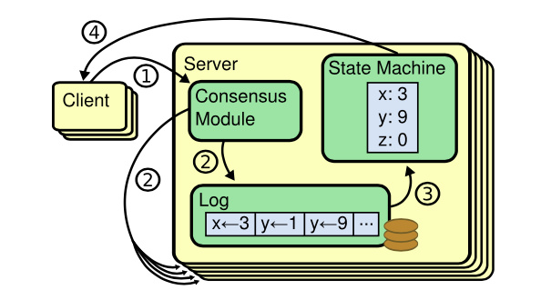
以下是etcd基于复制状态机模型的写请求流程：
- client发起一个写请求（put x = 3）；
- etcdserver模块向Raft共识模块提交请求，共识模块生成一个写提案日志条目。若server是Leader，则把日志条目广播给其他节点，并持久化日志条目到WAL中；
- 当一半以上节点持久化日志条目后，Leader的共识模块将此日志条目标记为已提交（committed），并通知其他节点提交；
- etcdserver模块从Raft共识模块获取已经提交的日志条目，异步应用到boltdb状态机存储中，然后返回给client。
更详细的原理我就不再重复描述，你可以参考 02 读和 03 写两节原理介绍。
ZooKeeper架构及原理
接下来我和你简要介绍下 ZooKeeper 原理，下图是它的架构图。
如下面架构图所示，你可以看到ZooKeeper中的节点与etcd类似，也划分为Leader节点、Follower节点、Observer节点（对应的Raft协议的Learner节点）。同时，写请求统一由Leader处理，读请求各个节点都能处理。
不一样的是它们的读行为和共识算法。
- 在读行为上，ZooKeeper默认读可能会返回stale data，而etcd使用的线性读，能确保读取到反应集群共识的最新数据。
- 共识算法上，etcd使用的是Raft，ZooKeeper使用的是Zab。
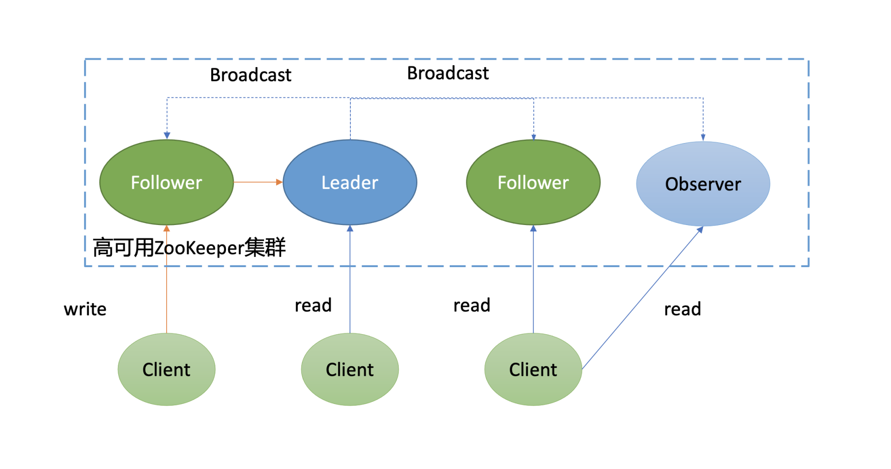
那什么是Zab协议呢？
Zab协议可以分为以下阶段：
- Phase 0，Leader选举（Leader Election)。一个节点只要求获得半数以上投票，就可以当选为准Leader；
- Phase 1，发现（Discovery）。准Leader收集其他节点的数据信息，并将最新的数据复制到自身；
- Phase 2，同步（Synchronization）。准Leader将自身最新数据复制给其他落后的节点，并告知其他节点自己正式当选为Leader；
- Phase 3，广播（Broadcast）。Leader正式对外服务，处理客户端写请求，对消息进行广播。当收到一个写请求后，它会生成Proposal广播给各个Follower节点，一半以上Follower节点应答之后，Leader再发送Commit命令给各个Follower，告知它们提交相关提案；
ZooKeeper是如何实现的Zab协议的呢？
ZooKeeper在实现中并未严格按 论文 定义的分阶段实现，而是对部分阶段进行了整合，分别如下：
- Fast Leader Election。首先ZooKeeper使用了一个名为Fast Leader Election的选举算法，通过Leader选举安全规则限制，确保选举出来的Leader就含有最新数据， 避免了Zab协议的Phase 1阶段准Leader收集各个节点数据信息并复制到自身，也就是将Phase 0和Phase 1进行了合并。
- Recovery Phase。各个Follower发送自己的最新数据信息给Leader，Leader根据差异情况，选择发送SNAP、DIFF差异数据、Truncate指令删除冲突数据等，确保Follower追赶上Leader数据进度并保持一致。
- Broadcast Phase。与Zab论文Broadcast Phase一致。
总体而言，从分布式系统CAP维度来看，ZooKeeper与etcd类似的是，它也是一个CP系统，在出现网络分区等错误时，它优先保障的数据一致性，牺牲的是A可用性。
Consul架构及原理
了解完ZooKeeper架构及原理后，我们再看看Consul，它的架构和原理是怎样的呢？
下图是 Consul架构图（引用自HashiCorp官方文档）。
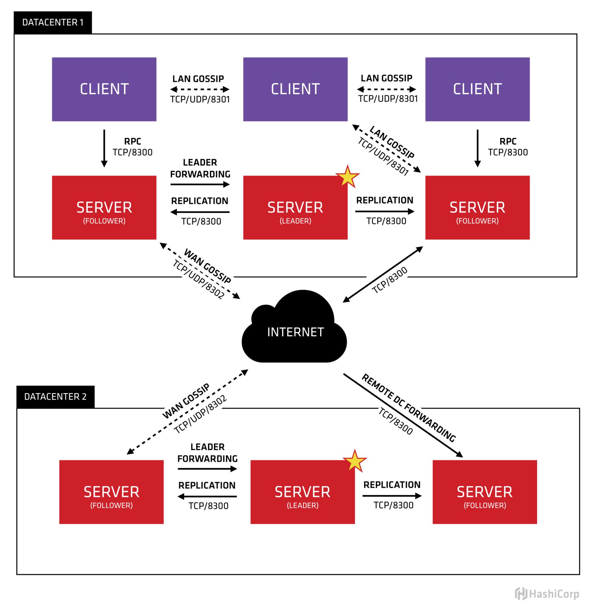
从图中你可以看到，它由Client、Server、Gossip协议、Raft共识算法、两个数据中心组成。每个数据中心内的Server基于Raft共识算法复制日志，Server节点分为Leader、Follower等角色。Client通过Gossip协议发现Server地址、分布式探测节点健康状态等。
那什么是Gossip协议呢？
Gossip中文名称叫流言协议，它是一种消息传播协议。它的核心思想其实源自我们生活中的八卦、闲聊。我们在日常生活中所看到的劲爆消息其实源于两类，一类是权威机构如国家新闻媒体发布的消息，另一类则是大家通过微信等社交聊天软件相互八卦，一传十，十传百的结果。
Gossip协议的基本工作原理与我们八卦类似，在Gossip协议中，如下图所示，各个节点会周期性地选择一定数量节点，然后将消息同步给这些节点。收到消息后的节点同样做出类似的动作，随机的选择节点，继续扩散给其他节点。
最终经过一定次数的扩散、传播，整个集群的各个节点都能感知到此消息，各个节点的数据趋于一致。Gossip协议被广泛应用在多个知名项目中，比如Redis Cluster集群版，Apache Cassandra，AWS Dynamo。
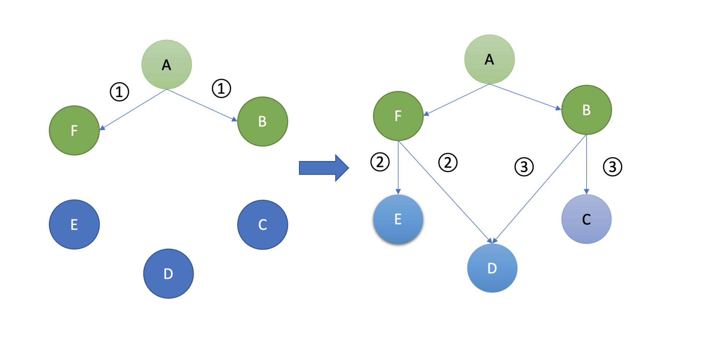
了解完Gossip协议，我们再看看架构图中的多数据中心，Consul支持数据跨数据中心自动同步吗？
你需要注意的是，虽然Consul天然支持多数据中心，但是多数据中心内的服务数据并不会跨数据中心同步，各个数据中心的Server集群是独立的。不过，Consul提供了 Prepared Query 功能，它支持根据一定的策略返回多数据中心下的最佳的服务实例地址，使你的服务具备跨数据中心容灾。
比如当你的API网关收到用户请求查询A服务，API网关服务优先从缓存中查找A服务对应的最佳实例。若无缓存则向Consul发起一个Prepared Query请求查询A服务实例，Consul收到请求后，优先返回本数据中心下的服务实例。如果本数据中心没有或异常则根据数据中心间 RTT 由近到远查询其它数据中心数据，最终网关可将用户请求转发给最佳的数据中心下的实例地址。
了解完Consul的Gossip协议、多数据中心支持，我们再看看Consul是如何处理读请求的呢?
Consul支持以下三种模式的读请求：
- 默认（default）。默认是此模式，绝大部分场景下它能保证数据的强一致性。但在老的Leader出现网络分区被隔离、新的Leader被选举出来的一个极小时间窗口内，可能会导致stale read。这是因为Consul为了提高读性能，使用的是基于Lease机制来维持Leader身份，避免了与其他节点进行交互确认的开销。
- 强一致性（consistent）。强一致性读与etcd默认线性读模式一样，每次请求需要集群多数节点确认Leader身份，因此相比default模式读，性能会有所下降。
- 弱一致性（stale)。任何节点都可以读，无论它是否Leader。可能读取到陈旧的数据，类似etcd的串行读。这种读模式不要求集群有Leader，因此当集群不可用时，只要有节点存活，它依然可以响应读请求。
重点特性比较
初步了解完etcd、ZooKeeper、Consul架构及原理后，你可以看到，他们都是基于共识算法实现的强一致的分布式存储系统，并都提供了多种模式的读机制。
除了以上共性，那么它们之间有哪些差异呢？ 下表是etcd开源社区总结的一个 详细对比项，我们就从并发原语、健康检查及服务发现、数据模型、Watch特性等功能上详细比较下它们功能和区别。
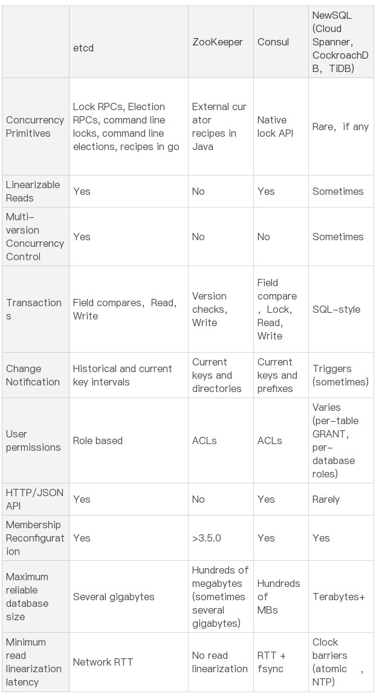
并发原语
etcd和ZooKeeper、Consul的典型应用场景都是分布式锁、Leader选举，以上场景就涉及到并发原语控制。然而etcd和ZooKeeper并未提供原生的分布式锁、Leader选举支持，只提供了核心的基本数据读写、并发控制API，由应用上层去封装。
为了帮助开发者更加轻松的使用etcd去解决分布式锁、Leader选举等问题，etcd社区提供了 concurrency包 来实现以上功能。同时，在etcdserver中内置了Lock和Election服务，不过其也是基于concurrency包做了一层封装而已，clientv3并未提供Lock和Election服务API给Client使用。 ZooKeeper所属的Apache社区提供了 Apache Curator Recipes 库来帮助大家快速使用分布式锁、Leader选举功能。
相比etcd、ZooKeeper依赖应用层基于API上层封装，Consul对分布式锁就提供了 原生的支持，可直接通过命令行使用。
总体而言，etcd、ZooKeeper、Consul都能解决分布式锁、Leader选举的痛点，在选型时，你可能会重点考虑其提供的API语言是否与业务服务所使用的语言一致。
健康检查、服务发现
分布式协调服务的另外一个核心应用场景是服务发现、健康检查。
与并发原语类似，etcd和ZooKeeper并未提供原生的服务发现支持。相反，Consul在服务发现方面做了很多解放用户双手的工作，提供了服务发现的框架，帮助你的业务快速接入，并提供了HTTP和DNS两种获取服务方式。
比如下面就是通过DNS的方式获取服务地址：
$ dig @127.0.0.1 -p 8600 redis.service.dc1.consul. ANY
最重要的是它还集成了分布式的健康检查机制。与etcd和ZooKeeper健康检查不一样的是，它是一种基于client、Gossip协议、分布式的健康检查机制，具备低延时、可扩展的特点。业务可通过Consul的健康检查机制，实现HTTP接口返回码、内存乃至磁盘空间的检测。
Consul提供了 多种机制给你注册健康检查，如脚本、HTTP、TCP等。
脚本是怎么工作的呢？介绍Consul架构时，我们提到过的Agent角色的任务之一就是执行分布式的健康检查。
比如你将如下脚本放在Agent相应目录下，当Linux机器内存使用率超过70%的时候，它会返回告警状态。
{
•"check":
•"id": "mem-util"
•"name": "Memory utilization"
•"args":
•"/bin/sh"
•"-c"
•"/usr/bin/free | awk '/Mem/{printf($3/$2*100)}' | awk '{ print($0); if($1 > 70) exit 1;}'
•]
•"interval": "10s"
•"timeout": "1s
}•
}
相比Consul，etcd、ZooKeeper它们提供的健康检查机制和能力就非常有限了。
etcd提供了Lease机制来实现活性检测。它是一种中心化的健康检查，依赖用户不断地发送心跳续租、更新TTL。
ZooKeeper使用的是一种名为临时节点的状态来实现健康检查。当client与ZooKeeper节点连接断掉时，ZooKeeper就会删除此临时节点的key-value数据。它比基于心跳机制更复杂，也给client带去了更多的复杂性，所有client必须维持与ZooKeeper server的活跃连接并保持存活。
数据模型比较
从并发原语、健康检查、服务发现等维度了解完etcd、ZooKeeper、Consul的实现区别之后，我们再从数据模型上对比下三者。
首先etcd正如我们在 07 节MVCC和 10 节boltdb所介绍的，它是个扁平的key-value模型，内存索引通过B-tree实现，数据持久化存储基于B+ tree的boltdb，支持范围查询、适合读多写少，可容纳数G的数据。
ZooKeeper的数据模型 如下。
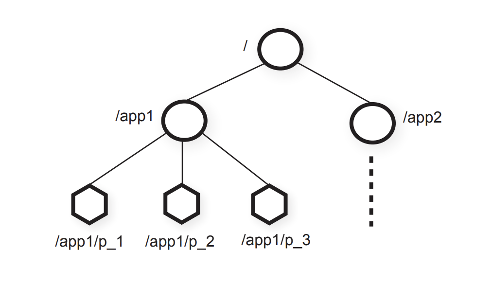
如上图所示，它是一种层次模型，你可能已经发现，etcd v2的内存数据模型与它是一样的。ZooKeeper作为分布式协调服务的祖师爷，早期etcd v2的确就是参考它而设计的。
ZooKeeper的层次模型中的每个节点叫Znode，它分为持久性和临时型两种。
- 持久性顾名思义，除非你通过API删除它，否则它将永远存在。
- 临时型是指它与客户端会话绑定，若客户端会话结束或出现异常中断等，它都将被ZooKeeper server自动删除，被广泛应用于活性检测。
同时你创建节点的时候，还可以指定一个顺序标识，这样节点名创建出来后就具有顺序性，一般应用于分布式选举等场景中。
那ZooKeeper是如何实现以上层次模型的呢？
ZooKeeper使用的是内存ConcurrentHashMap来实现此数据结构，因此具有良好的读性能。但是受限于内存的瓶颈，一般ZooKeeper的数据库文件大小是几百M左右。
Consul的数据模型及存储是怎样的呢？
它也提供了常用key-value操作，它的存储引擎是基于 Radix Tree 实现的 go-memdb，要求value大小不能超过512个字节，数据库文件大小一般也是几百M左右。与boltdb类似，它也支持事务、MVCC。
Watch特性比较
接下来我们再看看Watch特性的比较。
正在我在08节Watch特性中所介绍的，etcd v3的Watch是基于MVCC机制实现的，而Consul是采用滑动窗口实现的。Consul存储引擎是基于 Radix Tree 实现的，因此它不支持范围查询和监听，只支持前缀查询和监听，而etcd都支持。
相比etcd、Consul，ZooKeeper的Watch特性有更多的局限性，它是个一次性触发器。
在ZooKeeper中，client对Znode设置了Watch时，如果Znode内容发生改变，那么client就会获得Watch事件。然而此Znode再次发生变化，那client是无法收到Watch事件的，除非client设置了新的Watch。
其他比较
最后我们再从其他方面做些比较。
- 线性读。etcd和Consul都支持线性读，而ZooKeeper并不具备。
- 权限机制比较。etcd实现了RBAC的权限校验，而ZooKeeper和Consul实现的ACL。
- 事务比较。etcd和Consul都提供了简易的事务能力，支持对字段进行比较，而ZooKeeper只提供了版本号检查能力，功能较弱。
- 多数据中心。在多数据中心支持上，只有Consul是天然支持的，虽然它本身不支持数据自动跨数据中心同步，但是它提供的服务发现机制、 Prepared Query 功能，赋予了业务在一个可用区后端实例故障时，可将请求转发到最近的数据中心实例。而etcd和ZooKeeper并不支持。
如何构建高可靠的etcd 运维体系
运维：如何构建高可靠的etcd集群运维体系？ （原附件待补，文档暂未上线）